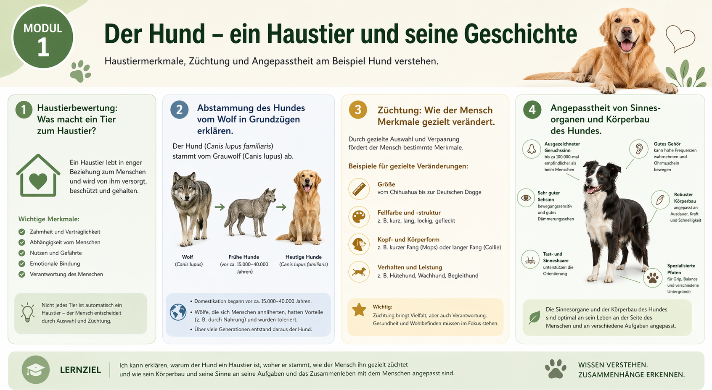

Modul 1: Der Hund - ein Haustier und seine Geschichte
Du lernst, was ein Tier zum Haustier macht, wie der Hund aus dem Wolf hervorging,
wie Zuechtung wirkt und warum Koerperbau und Sinne des Hundes gut zu seinen Aufgaben passen.

Lehrplanbezug Niedersachsen
Das Modul orientiert sich am Kerncurriculum Naturwissenschaften fuer die Sekundarstufe I.
Die dort genannten Inhalte fuer Jahrgang 5 werden hier in einem klaren Lernpfad umgesetzt.
Haustierbewertung: Was macht ein Tier zum Haustier?
Abstammung des Hundes vom Wolf in Grundzuegen erklaeren.
Zuechtung als gezielte Veraenderung von Merkmalen verstehen.
Angepasstheit von Sinnesorganen und Koerperbau beschreiben.